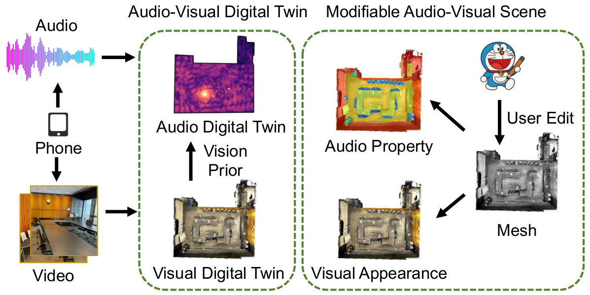
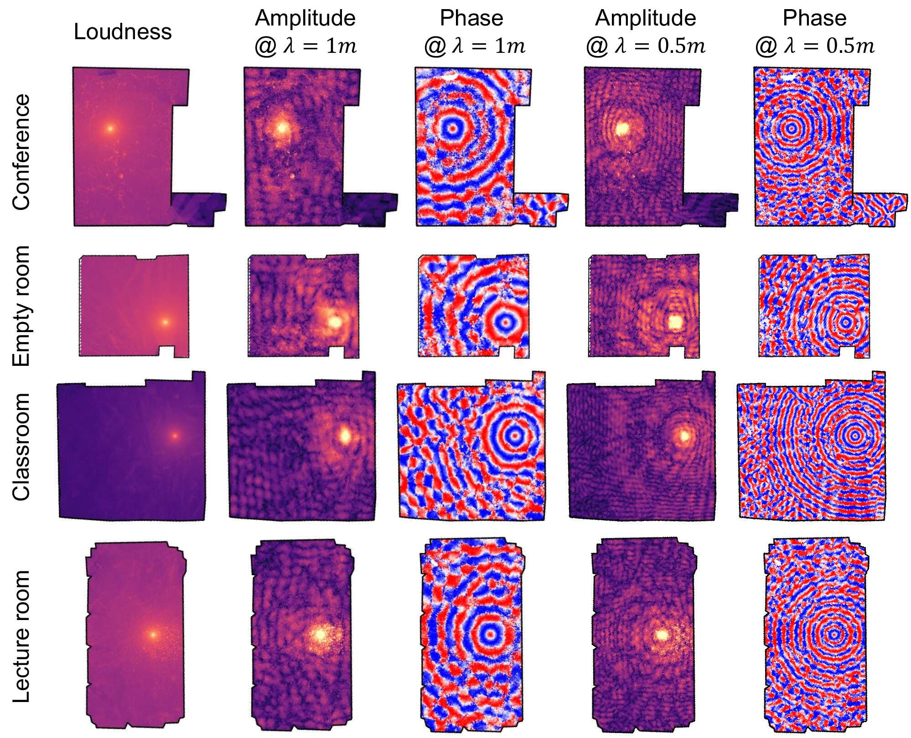
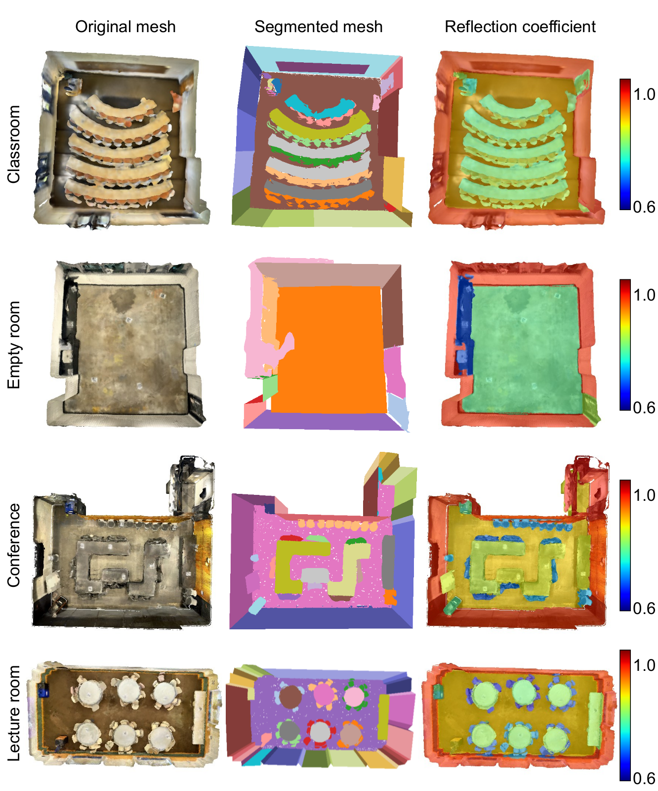
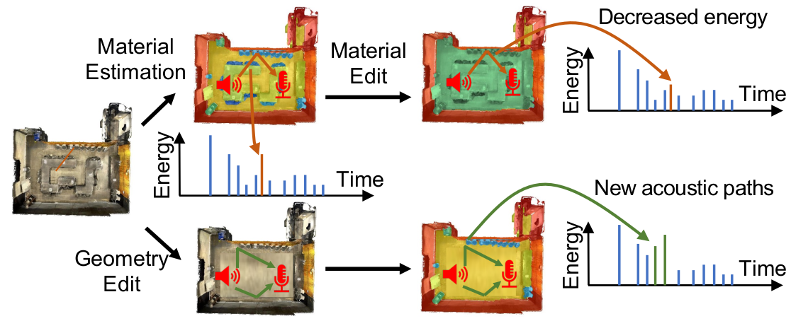
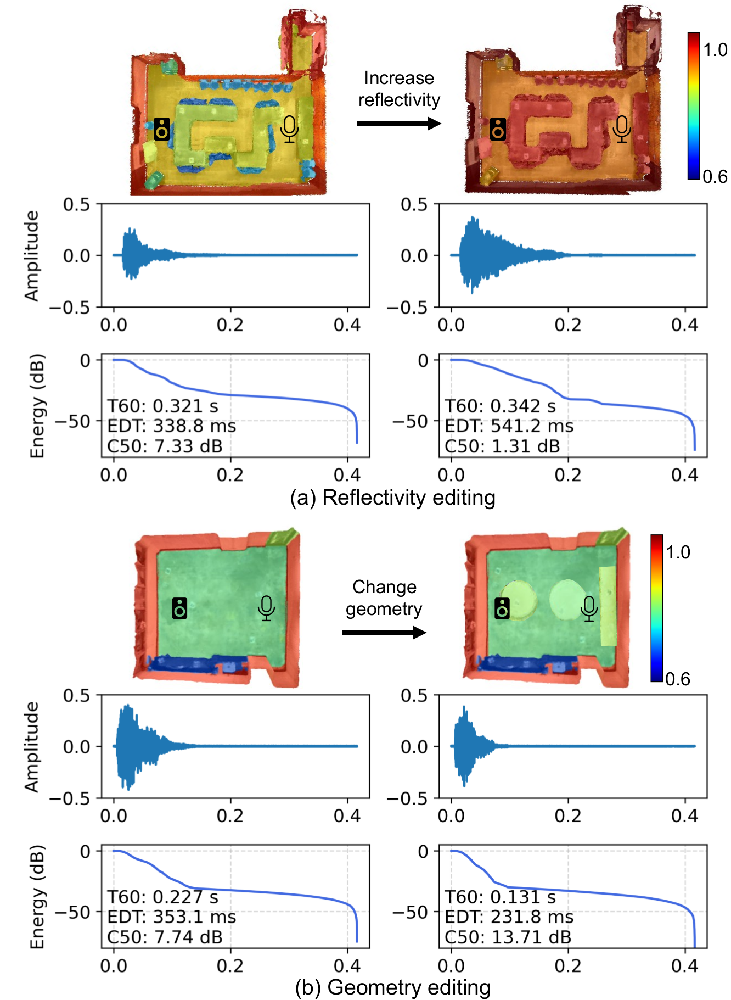

Demo Video

Presentation

Building Audio-Visual Digital Twins with Smartphones
TL;DR: AV-Twin turns a smartphone video-and-audio recording of a room into an editable audio-visual digital twin — a 3D scene whose materials, geometry, and layout can be edited, with both the acoustics (room impulse response) and the visuals updating automatically together.
Demo Video
Presentation

From a phone's audio and video recording of a room, AV-Twin reconstructs an audio-visual digital twin: a visual digital twin fused with vision priors into an audio digital twin. Per-surface acoustic properties are then recovered, so a user can edit materials or geometry and have both the rendered audio and visuals update together.
The vision-assisted acoustic field model reconstructs a continuous sound field over the entire room from sparse phone measurements: loudness, plus per-wavelength amplitude and phase, evaluated at λ = 1m and λ = 0.5m. The concentric phase rings around the source show the field staying consistent with wave propagation, across a conference room, an empty room, a classroom, and a lecture room.

AV-Twin segments the reconstructed mesh into surfaces and, through differentiable acoustic rendering, recovers a per-surface reflection coefficient — consistently across a classroom, an empty room, a conference room, and a lecture room.

Once materials and geometry are recovered, a user can edit either one directly on the 3D mesh. AV-Twin re-renders the impulse response along the acoustic paths affected by the edit, so the rendered audio reflects the new reflectivity or layout — while the visual appearance updates in lockstep.

Editing a surface's material (top) or the room's geometry (bottom) changes the acoustic paths between speaker and microphone, which is reflected in the rendered impulse response's energy decay.

Increasing wall reflectivity (a) or adding obstacles that create new acoustic paths (b) produces the expected change in T60, early decay time (EDT), and clarity (C50).
Music rendered along a moving listener trajectory using AV-Twin's reconstructed acoustic field (Ours), compared against an anchor-based baseline. Headphones are strongly recommended.
Lecture room
Ours (dynamic trajectory)
Baseline (anchor-based)
Meeting room
Ours (dynamic trajectory)
Baseline (anchor-based)
@inproceedings{lan2026avtwin,
title={Building Audio-Visual Digital Twins with Smartphones},
author={Lan, Zitong and Tang, Yiwei and Wang, Yuhan and Lai, Haowen and Hao, Yiduo and Zhao, Mingmin},
booktitle={Proceedings of the 24th ACM International Conference on Mobile Systems, Applications, and Services (MobiSys)},
year={2026}
}